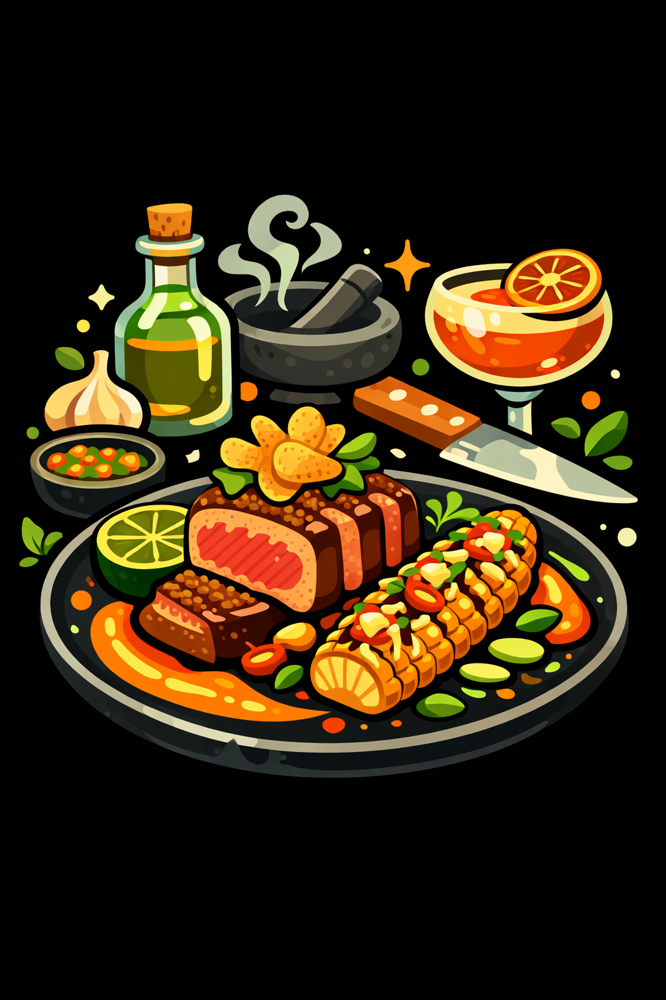

About Art For Your Mouth
Where food, design, and flavor all show up to make a little trouble.
Art For Your Mouth is built for people who think food should do more than just fill a plate. It should hit visually, make sense structurally, and taste like somebody actually cared.
This is a recipe-driven project with a creative backbone. Part food archive, part flavor lab, part visual experience. Clean recipes. Big ideas. No filler.
What You’ll Find
- Recipes that are clear enough to follow and strong enough to keep
- Flavor combinations that go beyond bland weeknight autopilot
- Food ideas shaped by design, story, texture, and balance
- A system that can scale into a deep searchable recipe library
- A site that treats food like a creative medium, not just content filler
The Point of View
This project comes from a builder’s mindset. Structure matters. Presentation matters. Function matters. Good food should have the same kind of attention behind it as good design.
The long game is a scalable platform with hundreds, then thousands, of recipes organized by flavor, style, ingredients, and mood, without turning into a cluttered mess.